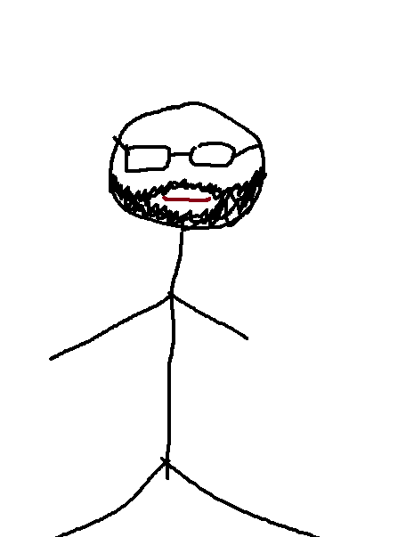
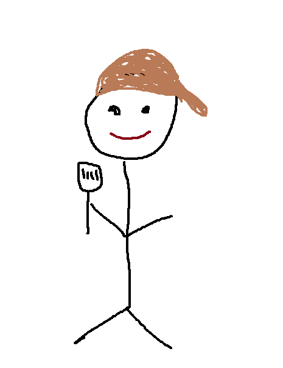
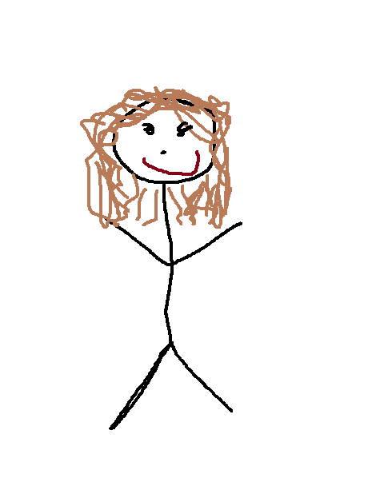
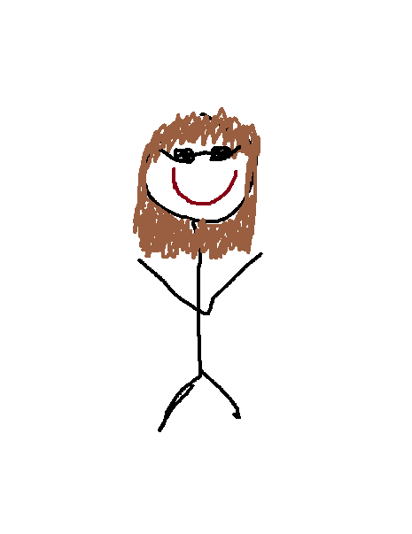
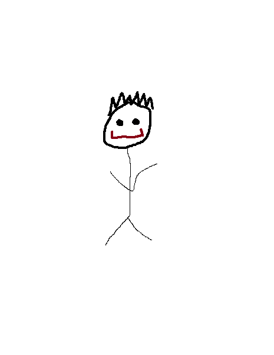

My name is Jon Veach and I am a 29 year old IT professional and software developer who has spent the last 9 years of his life serving in the U.S. Navy. He lived in Japan for 6 years but can barely speak or read Japanese! In his free time,
he can be found off-roading in his Suzuki Jimny or at home, developing software. My goal after completing my schooling is to get a job in Tokyo.

My name is Peter Carmichael and I am 26 year old software developer. Before changing careers I was a chef for the past 11 years. I hope to get a job in the area after completing Code Fellows working on UX. My main hobbies include; building
large lego displays for conventions, working on my old Land Rover, and doing fun stuff outside when the weather is nice.

My name is Sharina Stubbs. I am a software developer who is disturbingly fascinated by natural disasters, particularly volcanic eruptions, tsunamis and earthquakes. She is that person who will point out all the unreinforced masonry buildings
(URMs) in Seattle, monitor her elevation in case of a tsunami, and stash food like a squirrel in case the world ends.

My name is Susanna Lakey. I grew up on the dry side of the state in Kennewick, WA before moving to Seattle nine years ago. I spent the last four years working in a cat shelter before deciding to learn how to code at Code Fellows. When
I'm not busy learning, I can be found cuddling my three cats, crocheting, and watching Star Trek with my husband.

❮
❯
My name is Zerek Cover, I am a JavaScript Developer currently enrolled at CodeFellows. I enjoy long walks on the beach through a pixelated screen while slaying dragons. My goals are to complete the CodeFellows boot camp and be the first
in my family in 2 generations to truly have a trade-related career on my shoulders. I hope one day to take all of what I've learned, and be able to teach it to those around me, as well as the younger generation.